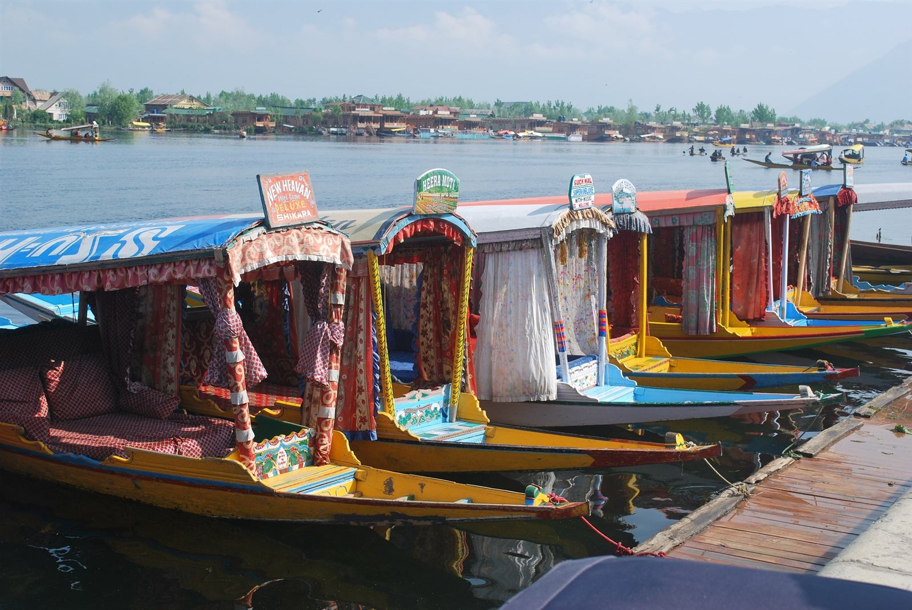
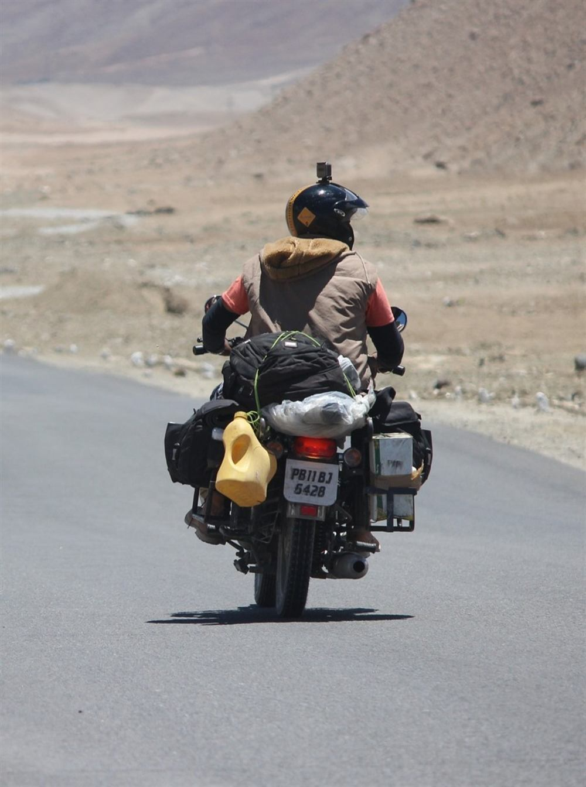

Group journeyModerate
Group journeyModerateKashmir Beyond the Postcards
Village stays, riverside pauses, and a week with room to wander.
✓ Three nights in Gurez✓ Riverside village stays
₹23,750guide / person
↗Group adventures, private escapes, treks, and quieter corners. Explore the possibilities, then make them your own.
Group journeyModerateVillage stays, riverside pauses, and a week with room to wander.
Group journeyModerateFollow the river into a quieter side of Kashmir, with longer village stays.

Group journeyModerateCrisp mornings, warm kahwa, and a flexible winter circuit.
Women-only proposalLeisurelyA proposed women-only journey with comfortable stays and a sociable pace.
Trek journeyChallengingAn expedition proposal for experienced walkers, with logistics agreed before booking.
A private planning option with carefully discussed stays and time together.
 Group journeyModerate
Group journeyModerateHigh mountain landscapes with extra space at the start to settle in.

Motorcycle journeyChallengingA riding proposal for licensed, experienced riders, with full support terms agreed first.
Group journeyChallengingA longer high-altitude proposal, with permissions and suitability at the centre.
 Private journeyLeisurely
Private journeyLeisurelyPine shade, open meadows, and an easy introduction to the Jammu hills.
Group journeyModerateA longer hill-country proposal, designed around local conditions and quiet days.
Pilgrimage journeyVariableTime for your Katra visit, followed by a gentler hill-country stay.
No journeys match those filters. Try another region or clear your search.
ⓘ Guide prices for planning, subject to availability and supplier confirmation. Your written quote confirms the total, taxes, sharing basis, and exact inclusions.
Tell us your dates, your people, and what you’d love to experience.